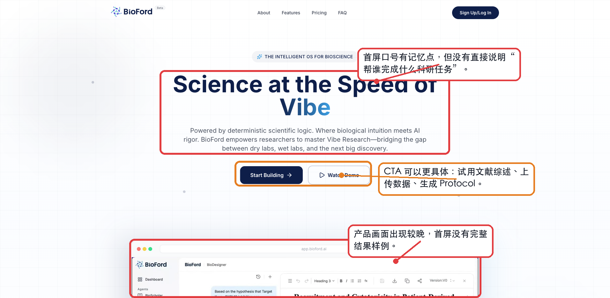
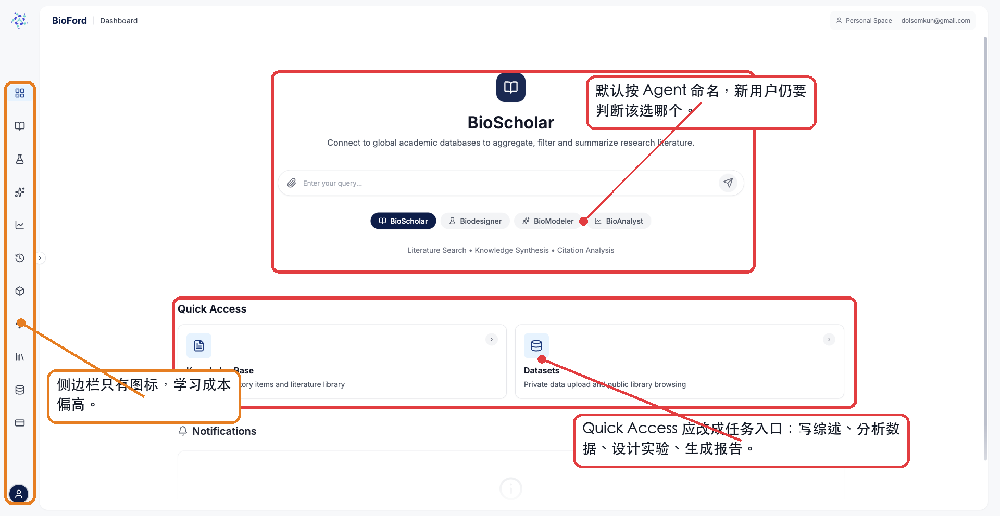
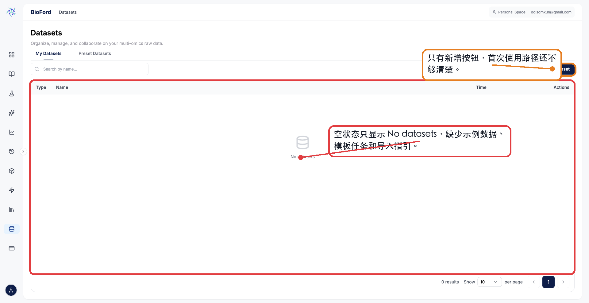
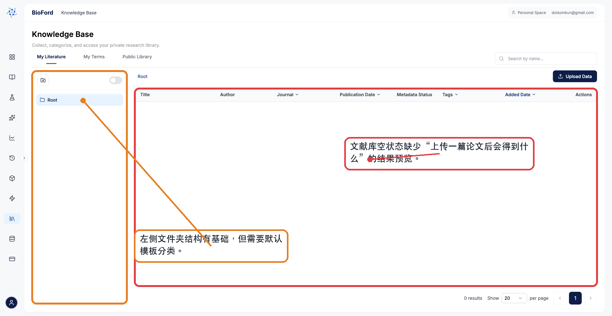
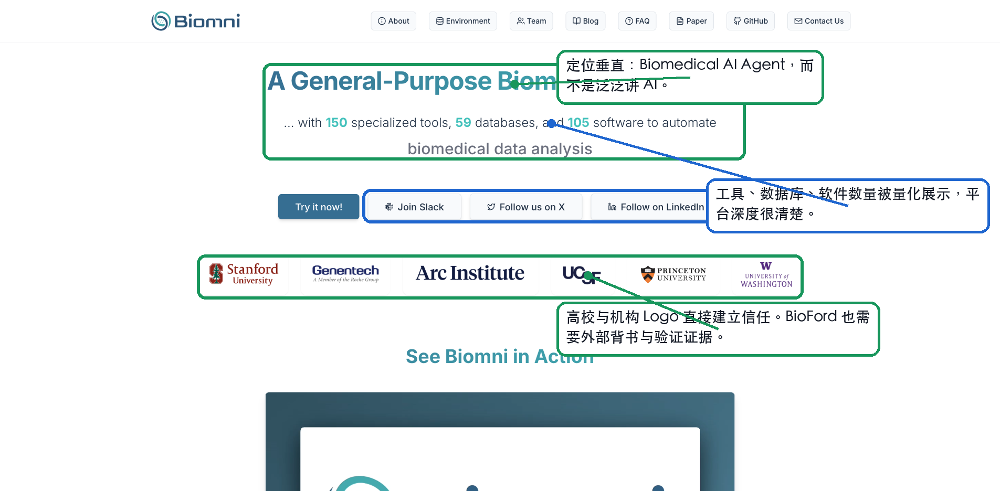
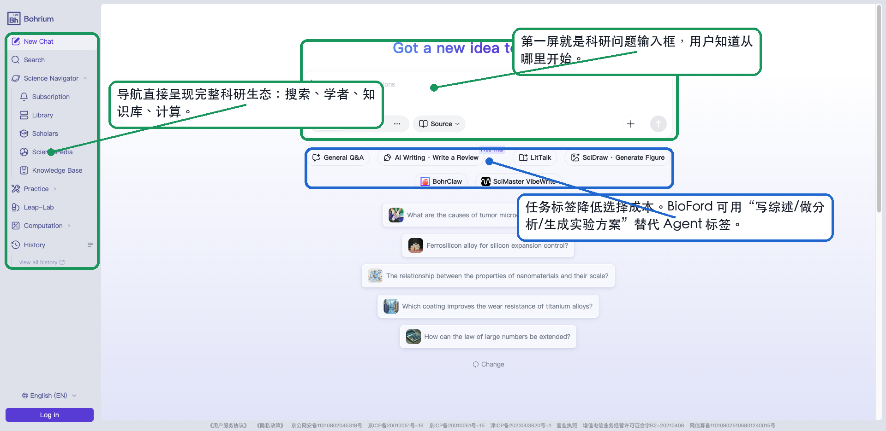
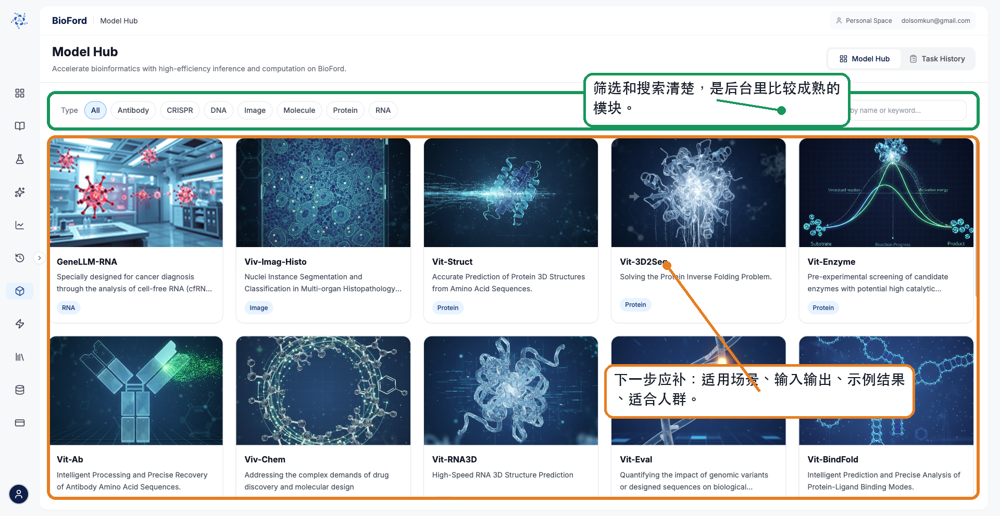
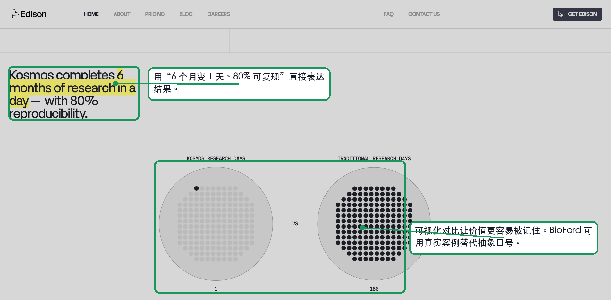
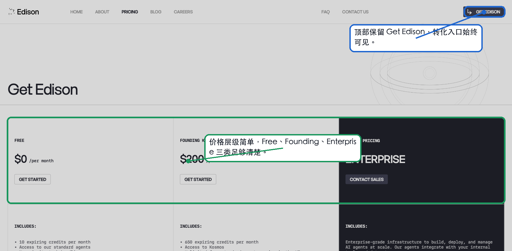

#06285B品牌主色、标题、主按钮
张堃 Zach Portfolio
从视觉层级、任务入口、空状态、信任背书和竞对样例出发，评估 BioFord 的产品体验。
生命科学 AI SaaS 平台 · Design System · v1.0
#06285B品牌主色、标题、主按钮
#0B63CE行动蓝、链接、交互态
#14B8A6生物青绿、数据、成功
#E6F7F4信息底色、辅助背景
#F59E0B安全预警、风险提示
#64748B中性文本、次要信息
24px 线性图标 · 2.2px 描边 · 圆角端点
基于 4px 基准，建立一致节奏。
高度 44px · 圆角 12px · 字重 600
高度 48px · 圆角 14px · 边框 #D5E1EE
从问题到证据链摘要，适合 BioScholar 首次任务入口。
上传数据，或用示例数据体验自动分析和报告生成。
Try preset dataset| Asset | Type | Status | Updated | Owner | Action |
|---|---|---|---|---|---|
| Literature set - Cancer | 知识库 | Ready | 2026-05-10 | Zhang K. | 查看分析 |
| RNA-seq dataset | 数据集 | New | 2026-05-09 | Zhang K. | 生成报告 |






日期：2026-05-11 对象：BioFord、Bohrium、EdisonScientific、Biomni 用途：产品体验诊断、视觉设计评估、官网与后台优化参考
BioFord 的核心功能方向是成立的：文献、建模、实验方案、数据分析、知识库、数据集、模型库这些模块都已经具备雏形。
目前主要优化点不是“没有功能”，而是用户第一次进入时，还不能快速理解三件事：
和竞对相比：
| 网站 | UI/UX 优势 | BioFord 可补足方向 |
|---|---|---|
| EdisonScientific | 结果表达清楚，用科研效率和验证结果建立价值感 | BioFord 目前更偏功能描述，建议补充结果证明 |
| Biomni | 学术定位清楚，信任背书强，能力规模被量化展示 | BioFord 建议补充机构、论文、模型验证、案例背书 |
| Bohrium | 平台入口完整，用户可以从搜索、学者、知识库、计算等任务进入 | BioFord 后台入口多，但建议补充任务型引导 |
主要优化方向：
BioFord 应该从“展示四个 AI Agent”转成“帮助科研人员完成具体科研任务”。
BioFord 当前主要使用深蓝、浅蓝、白色和浅灰，整体方向适合生命科学和科研 SaaS：干净、克制、可信。但目前视觉层级偏单一，页面中大量区域都使用白底、浅灰线框、深蓝按钮，导致重点不够突出。
| 项目 | 当前表现 | 可改进点 | 建议 |
|---|---|---|---|
| 主色 | 深蓝用于按钮、选中态和品牌文字 | 专业感足够，但页面情绪偏冷，建议补充生命科学领域的活力 | 保留深蓝作为主色，增加青绿色或生物荧光绿作为辅助色，用于数据、模型、实验结果等关键状态 |
| 背景色 | 大量白色和浅灰 | 清爽，但不同模块之间区分度不够 | 为任务入口、结果预览、可信证据区设置轻微底色差异 |
| 强调色 | 当前主要还是蓝色体系 | 重要信息、普通信息、状态信息区分不明显 | 建立语义色：成功、警告、风险、引用、实验安全、模型结果 |
| 品牌识别 | Logo 有科技感 | 品牌色没有延展到图表、图标、卡片和工作流 | 建立统一的设计色板，并规定不同功能模块的辅助色 |
推荐色彩方向：
| 用途 | 建议颜色方向 |
|---|---|
| 品牌主色 | 深海军蓝，用于 Logo、主按钮、标题强调 |
| 科研辅助色 | 青绿色，用于生物数据、分析结果、可信证据 |
| 模型与计算 | 蓝紫色或电光蓝，用于 AI 模型、推理、计算任务 |
| 实验与安全 | 琥珀色或红色，仅用于风险、合规、安全提示 |
| 背景 | 冷白、极浅蓝灰，保持专业和可读性 |
BioFord 后台图标风格整体统一，线性图标适合科研工具。但目前侧边栏以纯图标呈现，对新用户不够友好。
| 项目 | 当前表现 | 可改进点 | 建议 |
|---|---|---|---|
| 图标风格 | 线性图标，视觉上较统一 | 图标含义不够直观，特别是四大 Agent、Model Hub、Datasets | 默认显示图标+文字，或在首次进入时展开导航 |
| 状态表达 | 选中态用浅蓝底 | 可识别，但差异不够强 | 当前模块使用更明确的左侧高亮条或文字高亮 |
| 功能图标 | 生物、实验、数据相关图标数量足够 | 建议补充任务层面的图标表达 | 为“写综述、分析数据、设计实验、生成报告”设计固定图标 |
| 图标与文字关系 | 部分页面只有图标，没有解释 | 增加学习成本 | 对低频功能增加 tooltip 或短描述 |
建议建立两级图标体系：
| 类型 | 用途 |
|---|---|
| 功能图标 | BioScholar、BioDesigner、BioModeler、BioAnalyst、Model Hub、Datasets |
| 任务图标 | Literature Review、Data Analysis、Protocol Design、Molecular Modeling、Report Generation |
BioFord 的字体整体干净，字号和行高基本可读。但公开首页和后台之间的视觉节奏差异较大：官网标题很大，后台页面则偏工具化，建议补充关键任务的视觉焦点。
| 项目 | 当前表现 | 可改进点 | 建议 |
|---|---|---|---|
| 官网标题 | Hero 字号大，视觉冲击强 | 标题表达抽象，视觉强但信息弱 | 保留大标题，但标题内容应更具体 |
| 后台标题 | 页面标题清楚，如 Datasets、Knowledge Base、Model Hub | 层级偏平，任务入口不突出 | 增加页面副标题、任务卡片标题、结果预览标题的层级 |
| 正文 | 说明文字偏灰 | 可读性尚可，但关键信息容易被弱化 | 重要说明使用更高对比度，辅助说明再使用浅灰 |
| 卡片文字 | 模型卡片文字较完整 | 部分描述被截断，建议补充“适合什么任务”的快速判断 | 卡片中增加固定字段：适用任务、输入、输出、可信度 |
BioFord 的后台布局干净，留白充足，适合科研工具。但在空状态和首页中，留白没有被有效利用，导致页面显得“空”，而不是“清爽”。
| 页面 | 当前可改进点 | 建议 |
|---|---|---|
| Dashboard | 中间区域留白大，任务入口仍可补足 | 增加任务卡片、示例问题、最近任务 |
| Datasets | 表格区域巨大，但空状态很弱 | 空状态改成三栏：上传数据、试用示例数据、查看分析样例 |
| Knowledge Base | 文献表格完整，但没有展示上传后的价值 | 加结果预览卡片，如自动摘要、引用、标签、证据链 |
| Model Hub | 卡片密度合适，视觉完成度较高 | 增加模型详情、示例输出和可信指标 |
BioFord 的卡片、按钮、标签整体偏简洁，但不同模块的组件承担的信息量差异较大。
| 组件 | 当前表现 | 建议 |
|---|---|---|
| 主按钮 | 深蓝色，识别度较好 | CTA 文案要更具体，减少泛化按钮 |
| 次按钮 | 边框按钮较清楚 | Watch Demo、Preset Dataset 等次级动作应有明确结果说明 |
| 标签 | Model Hub 分类标签清楚 | 四大 Agent 也可以用任务标签辅助说明 |
| 表格 | 信息结构规整 | 空表格状态需要承载引导，而不是只显示空 |
| 卡片 | Model Hub 卡片表现最好 | Dashboard 的 Quick Access 卡片需要更像任务入口 |
当前内容结构更偏“功能陈列”，而不是“用户任务路径”。
| 当前结构 | 可改进点 | 推荐结构 |
|---|---|---|
| About、Features、Pricing、FAQ | 官网结构常规，但建议补充 Use Cases、Workflow、Case Studies | 增加 Workflow、Use Cases、Scientific Proof、Demo |
| 四大 Agent | 产品能力清楚，但用户要自己理解应用场景 | 用任务场景承接 Agent：写综述、做建模、设计实验、分析数据 |
| Knowledge Base / Datasets / Model Hub | 资产模块完整 | 需要和真实科研流程连接 |
| Pricing | 套餐信息完整 | 应增加适合人群和团队价值 |
推荐内容顺序：
| 顺序 | 内容 |
|---|---|
| 1 | BioFord 能帮助生命科学团队完成什么完整流程 |
| 2 | 用户可以从哪些任务开始 |
| 3 | 每个任务会调用哪些 Agent 和模型 |
| 4 | 最终输出是什么 |
| 5 | 结果为什么可信 |
| 6 | 适合哪些团队和角色 |
| 7 | 如何试用或购买 |
可改进点：
| 区域 | 当前表现 | 影响 |
|---|---|---|
| Hero 标题 | Science at the Speed of Vibe 有记忆点，但偏抽象 | 新用户不一定知道产品到底能帮自己做什么 |
| 副标题 | 提到 dry lab、wet lab、discovery，但没有明确任务结果 | 对 PI、研究生、生信人员、实验员的价值不够直接 |
| CTA | Start Building、Watch Demo 比较通用 | 没有告诉用户第一步可以试什么 |
| 产品截图 | 首屏下方露出较晚，且看不到完整结果样例 | 用户无法快速判断产品质量和实际输出 |
建议：
| 优先级 | 建议 |
|---|---|
| P0 | 首屏加一句更直白的价值表达：From literature insights to validated experiment protocols, BioFord helps life science teams complete research workflows with AI agents. |
| P0 | CTA 改得更具体：Try Literature Review、Upload Dataset、Generate Protocol、Watch Full Workflow Demo |
| P1 | 首屏展示一个完整工作流结果，而不只是产品界面局部图 |
| P1 | 在首屏附近补充可信信息：数据来源、模型数量、引用溯源、安全机制、典型客户或研究案例 |
可改进点：
| 区域 | 当前表现 | 影响 |
|---|---|---|
| 主入口 | 默认展示 BioScholar，再切换 BioDesigner、BioModeler、BioAnalyst | 新用户需要理解每个 Agent 的含义，学习成本偏高 |
| 输入框 | 只有 Enter your query... | 建议补充示例问题，不知道该输入什么 |
| Quick Access | 只有 Knowledge Base 和 Datasets | 更像资产管理入口，不像科研任务入口 |
| 左侧导航 | 图标为主 | 对第一次使用的人不够友好 |
建议：
| 优先级 | 建议 |
|---|---|
| P0 | 首页改成任务入口：写文献综述、分析多组学数据、生成实验方案、做分子建模、生成实验报告 |
| P0 | 输入框下方给 4-6 个真实示例问题 |
| P1 | Quick Access 改成“最近任务 + 常用任务 + 示例工作流” |
| P1 | 左侧导航支持展开文字，默认给新用户显示图标+文字 |
推荐的首页结构：
| 模块 | 内容 |
|---|---|
| Start a Research Task | Literature Review、Dataset Analysis、Protocol Design、Molecular Modeling |
| Continue Recent Work | 最近的文献、数据集、模型任务、报告 |
| Try with Examples | 示例论文、示例多组学数据、示例 Protocol |
| Research Assets | Knowledge Base、Datasets、Model Hub |
可改进点：
| 区域 | 当前表现 | 影响 |
|---|---|---|
| 空状态 | 只显示 No datasets | 用户不知道下一步该做什么 |
| 新建入口 | 只有 New Dataset | 对没有准备数据的新用户不友好 |
| Preset Datasets | 有入口，但在当前页面没有被强调 | 没有承担新用户引导作用 |
建议：
| 优先级 | 建议 |
|---|---|
| P0 | 空状态增加三种入口：Upload Your Dataset、Try Preset Dataset、View Analysis Example |
| P0 | 放一个示例数据集，让用户不用准备文件也能体验 BioAnalyst |
| P1 | 上传前说明支持的数据类型、文件格式、分析结果 |
| P1 | 增加“上传后会发生什么”的流程预览 |
推荐空状态文案：
No datasets yet. Upload your multi-omics data or try a preset dataset to generate charts, statistical analysis, and a research-ready report.
可改进点：
| 区域 | 当前表现 | 影响 |
|---|---|---|
| 文献库 | 有 My Literature、My Terms、Public Library | 信息架构完整，但价值没有被展示出来 |
| 空状态 | 只显示 No literature | 用户不知道上传文献后能得到什么 |
| 左侧文件夹 | 有 Root 结构 | 但没有默认模板分类 |
建议：
| 优先级 | 建议 |
|---|---|
| P0 | 空状态增加 Upload Paper、Import from PubMed、Try Sample Library |
| P0 | 展示上传后可获得的结果：摘要、作者、期刊、引用、关键结论、标签、证据链 |
| P1 | 提供默认分类模板：Literature Review、Target Discovery、Protocol References、Dataset Papers |
| P1 | 支持按项目组织文献，而不只是文件夹 |

做得好的地方：
| 区域 | 优点 |
|---|---|
| 模型卡片 | 图片、名称、描述、标签已经比较完整 |
| 筛选器 | Antibody、CRISPR、DNA、Image、Molecule、Protein、RNA 分类清楚 |
| 搜索 | 支持按模型名称或关键词搜索 |
还可以提升的地方：
| 优先级 | 建议 |
|---|---|
| P0 | 每个模型卡片补充适用任务，例如 Protein Structure Prediction、Variant Effect Prediction |
| P0 | 补充输入和输出说明，例如输入 FASTA，输出 3D structure / score / report |
| P1 | 增加示例结果截图 |
| P1 | 增加可信信息：模型来源、版本、适用边界、验证指标 |
| P2 | 支持按科研任务筛选，而不只是按数据类型筛选 |

值得参考：
| 区域 | 做得好在哪里 | BioFord 可借鉴 |
|---|---|---|
| 结果表达 | 6 months of research in a day、80% reproducibility 很直观 | 用真实案例表达效率提升，而不是只说 AI 自动化 |
| 对比图 | 用可视化方式表达传统研究与 AI 研究的差异 | BioFord 可以展示“传统流程 vs BioFord 流程” |
| 科学发现 | 用具体发现证明产品价值 | BioFord 可以用案例卡片说明：问题、方法、输出、验证状态 |
BioFord 可以参考的案例卡片结构：
| 字段 | 示例 |
|---|---|
| Research Question | 研究问题是什么 |
| BioFord Workflow | 用了哪些 Agent |
| Output | 生成了什么结果 |
| Evidence | 引用了哪些文献或数据 |
| Validation | 是否经过人工、实验或公开数据验证 |
值得参考：
| 区域 | 做得好在哪里 | BioFord 可借鉴 |
|---|---|---|
| 定位 | A General-Purpose Biomedical AI Agent 明确垂直领域 | BioFord 要明确自己是生命科学智能操作系统，而不是泛科研 AI |
| 能力规模 | 150 tools、59 databases、105 software 被量化展示 | BioFord 可以量化模型库、数据源、支持任务、文献来源 |
| 信任背书 | Stanford、Genentech、Arc Institute、UCSF 等 Logo 很强 | BioFord 需要展示合作方、顾问、模型来源、论文或实验验证 |
| 社区入口 | Slack、X、LinkedIn、GitHub、Paper | BioFord 可以补充论文、白皮书、GitHub 示例、社区入口 |
BioFord 可以补充的信任模块：
| 模块 | 内容 |
|---|---|
| Data Sources | PubMed、bioRxiv、用户私有文献、公开数据库 |
| Model Library | 模型数量、覆盖方向、验证方式 |
| Safety & Compliance | 实验安全检查、权限管理、数据隔离 |
| Scientific Traceability | 引用来源、证据链、推理过程 |
| Case Studies | 真实任务、结果、验证状态 |
值得参考：
| 区域 | 做得好在哪里 | BioFord 可借鉴 |
|---|---|---|
| 首屏输入框 | 用户一进入就知道可以问科学问题 | BioFord 首页可以提供任务输入框和示例问题 |
| 任务标签 | General Q&A、AI Writing、LitTalk、SciDraw 等入口明确 | BioFord 可以改成写综述、生成图表、设计实验、分析数据 |
| 左侧导航 | Search、Scholars、SciencePedia、Knowledge Base、Computation 等形成平台感 | BioFord 可以保留模块，但要增加文字说明和任务分组 |
| 示例问题 | 直接给用户可点击的问题 | BioFord 应该给生命科学场景的示例任务 |
推荐给 BioFord 的示例可改进点：
| 场景 | 示例问题 |
|---|---|
| 文献综述 | Summarize recent papers on CXCL12 inhibition in tumor microenvironment. |
| 生信分析 | Analyze this single-cell RNA-seq dataset and identify marker genes. |
| 实验方案 | Generate a qPCR protocol for validating target gene expression. |
| 分子建模 | Predict the binding mode between this protein and ligand. |
| 报告生成 | Create a report from this dataset with charts and statistical interpretation. |

值得参考：
| 区域 | 做得好在哪里 | BioFord 可借鉴 |
|---|---|---|
| 套餐层级 | Free、Founding、Enterprise 三类清楚 | BioFord 套餐较多时，需要突出推荐套餐和适合人群 |
| 顶部 CTA | Get Edison 始终可见 | BioFord 可保留固定 CTA，引导试用具体任务 |
| Enterprise | 单独强调企业级能力 | BioFord 的 Team 套餐可以强化团队知识库、数据隔离、权限管理 |
BioFord Pricing 建议：
| 当前可优化点 | 建议 |
|---|---|
| 套餐中 credits、storage、models 信息较多 | 增加“适合谁”：Individual Researcher、Lab Team、Biotech R&D |
| 功能差异不够好扫读 | 用对比表展示关键差异 |
| Team 价值不够突出 | 强化团队知识库、共享数据集、权限管理、合规审计 |
| 优化项 | 原因 | 目标 |
|---|---|---|
| 重写首屏价值表达 | 当前口号抽象，用户理解成本高 | 让用户 5 秒内知道产品价值 |
| 后台首页改成任务入口 | Agent 名称对新用户不够直观 | 缩短首次成功路径 |
| 空状态增加示例和模板 | Datasets、Knowledge Base 空状态偏弱 | 提升新用户激活 |
| 增加可信证据 | 科研产品必须解决信任问题 | 提升注册和试用意愿 |
| 优化项 | 原因 | 目标 |
|---|---|---|
| 四大 Agent 独立说明页 | SEO 和转化都需要清晰页面 | 支撑 BioScholar、BioAnalyst、BioModeler、BioDesigner 的关键词 |
| 增加完整 Demo 工作流 | 只看功能不够，需要看到结果 | 提升理解和转化 |
| Model Hub 补输入输出和示例 | 当前模型卡片还不够决策友好 | 提升专业用户信任 |
| Pricing 增加人群说明 | 套餐需要更容易选择 | 降低购买决策成本 |
| 优化项 | 原因 | 目标 |
|---|---|---|
| 做角色分流页面 | PI、研究生、生信、湿实验人员需求不同 | 提高转化效率 |
| 做案例库 | 科研产品需要证据 | 支撑销售、SEO、GEO |
| 做模板库 | Protocol、Dataset、Report 都适合模板化 | 增加可搜索内容和产品使用深度 |
| 做社区与学术背书 | Biomni 的学术背书很强 | 提升可信度 |
| 顺序 | 模块 | 内容 |
|---|---|---|
| 1 | Hero | 明确说明 BioFord 是生命科学 AI 工作流平台 |
| 2 | Task Entry | Literature Review、Data Analysis、Protocol Design、Molecular Modeling |
| 3 | Workflow | Literature → Hypothesis → Model → Protocol → Analysis → Report |
| 4 | Proof | 数据来源、模型数量、引用溯源、安全机制 |
| 5 | Demo | 一个完整任务从输入到输出 |
| 6 | Agents | BioScholar、BioDesigner、BioModeler、BioAnalyst |
| 7 | Use Cases | For PI、For Bioinformatics、For Wet Lab、For Drug Discovery |
| 8 | Pricing / CTA | 试用、预约演示、团队方案 |
| 顺序 | 模块 | 内容 |
|---|---|---|
| 1 | Start a Task | 写综述、分析数据、设计实验、分子建模 |
| 2 | Example Tasks | 让用户一键试用真实场景 |
| 3 | Recent Work | 最近的文献、数据集、模型任务、报告 |
| 4 | Research Assets | Knowledge Base、Datasets、Model Hub |
| 5 | Usage / Plan | Credits、Storage、Plan |
UI/UX 优化不仅影响产品体验，也会影响 SEO、GEO 和 SEM。
| 方向 | UI/UX 应该配合什么 |
|---|---|
| SEO | 四大 Agent 独立页、任务页、模板页、案例页 |
| GEO | 明确的定义、结构化说明、引用来源、案例证据 |
| SEM | 每个广告关键词都要有对应落地页，而不是全部导向首页 |
推荐优先做的页面：
| 页面 | 对应关键词 |
|---|---|
| BioFord AI for Science OS | ai for science, scientific ai, biomedical ai agent |
| BioScholar | literature synthesis, scientific literature, ai research assistant |
| BioAnalyst | bioinformatics ai, single cell analysis, ai genomics |
| BioDesigner | protocol generator, reagent calculator, lab protocol ai |
| BioModeler | molecular modeling, molecular docking ai, protein structure prediction |
| Best AI Tools for Research | best ai tools for research, best research ai |